Your journey to history, culture, and beauty begins here.
Tourist Attractions
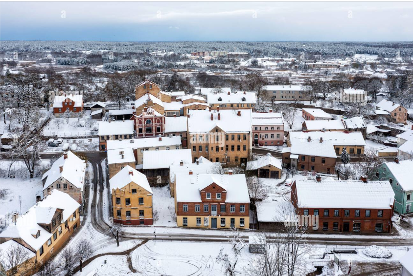
Auce Old Town: Discover the charm of cobblestone streets, traditional Latvian wooden houses, historic buildings, and quaint cafés offering local pastries and coffee. Guided walking tours are available to delve into the town's history.
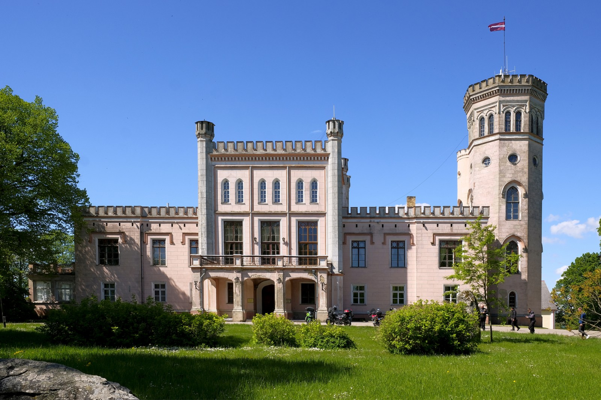
Auce Manor: A 19th-century manor featuring beautifully landscaped gardens, historical exhibits, and occasional cultural events. The manor's interiors showcase period furnishings and art collections.
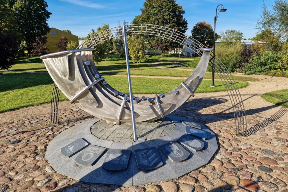
Nature Parks: Enjoy tranquil settings with walking trails, birdwatching, picnic areas, and scenic views. Popular parks include Auce Forest Reserve and Lielupe Riverbank trails.
How to Reach Auce
Auce is conveniently accessible through various modes of transportation, making it easy to explore this charming town from different parts of Latvia:
By Car: Enjoy a scenic 1.5-hour drive from Riga via the A9 highway, followed by regional roads. Parking is readily available in town. If you're traveling from Liepāja, the journey takes around 2 hours, while from Ventspils, it’s approximately 2.5 hours. The well-maintained roads make driving an enjoyable experience, with opportunities to admire Latvia’s picturesque countryside along the way.
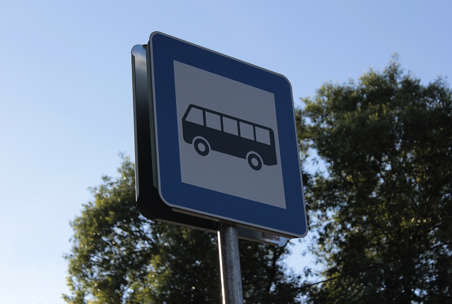
By Bus: Frequent buses operate between Riga and Auce, offering a budget-friendly option for travelers. The trip from Riga takes about 2 hours, and the route provides a chance to enjoy the countryside’s natural beauty. Buses from other cities such as Liepāja, Dobele, and Jelgava are also available, making Auce easily accessible for domestic tourists.
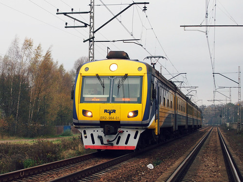
By Train: Take a train from Riga to Jelgava, and connect to Auce via a local train or bus. Trains are comfortable, affordable, and an excellent option for travelers looking to avoid driving. From Jelgava, it’s a short 40-minute train or bus ride to Auce. If you’re coming from Daugavpils or other eastern cities, you can connect via Riga or Jelgava for a seamless journey.
By Bicycle: For the adventurous traveler, cycling to Auce is a fantastic option, especially during the warmer months. Scenic bike paths from nearby towns like Dobele make the journey a delightful experience for nature lovers and fitness enthusiasts.
Once in Auce, navigating the town is straightforward, with most attractions within walking or cycling distance. For those seeking convenience, local taxi services and rental bikes are also available to help you explore the area effortlessly.
Travel Time
Reaching Auce from nearby Latvian cities and neighboring countries is straightforward, offering a range of convenient options for travelers. Below is an overview of approximate travel times from key cities:
From Riga: About 1.5 hours by car via the A9 highway. By public transport, it takes approximately 2 hours using train and bus connections, with frequent departures throughout the day.
From Liepāja: A 2-hour drive through scenic roads makes it a pleasant journey for those coming from Latvia’s western coast. Public transport options, such as buses, take slightly longer, around 2.5 to 3 hours.
From Jelgava: A short and convenient 40-minute train or bus ride connects Auce to this nearby city, perfect for a day trip.
From Vilnius, Lithuania: A 3-hour drive makes Auce an ideal weekend destination for visitors from Lithuania’s capital. For public transport, take a bus or train to Riga, then connect to Auce via train or bus, which adds an extra 2 hours.
From Kaunas, Lithuania: A 3.5-hour drive through cross-border routes. Public transport options involve traveling to Riga first, then continuing to Auce.
From Tallinn, Estonia: A 4.5-hour drive by car via Riga, making Auce a viable stop on a Baltic road trip. Using public transport, expect a journey of approximately 6-7 hours, including connections in Riga.
From Warsaw, Poland: A 9-hour drive connects Auce with Poland’s capital. For public transport, take a bus or train to Riga (around 8 hours) and then connect to Auce, adding 2 more hours.
Whether you're driving or using public transportation, Auce is accessible from many major Baltic cities. For those arriving by air in Riga International Airport, renting a car is a popular choice, with a direct drive taking only 1.5 hours. Alternatively, airport buses connect to Riga city center, where you can board a train or bus to Auce.
Traveling from further afield? Consider taking international bus lines or trains to Riga, and then continue onward to Auce. The journey offers a chance to explore Latvia's beautiful countryside, making it as enjoyable as the destination itself.
Weather
Auce experiences a temperate climate with four distinct seasons, each offering a unique charm and opportunities to explore the region's natural beauty:
Summer (June to August): Warm and sunny, with temperatures ranging from 15°C to 25°C. Ideal for outdoor activities like hiking, cycling, and enjoying local festivals and picnics in the scenic parks of Auce.
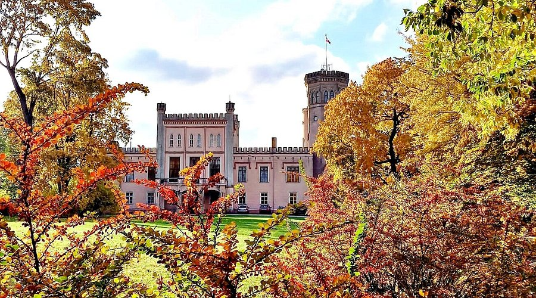
Autumn (September to November): Mild and colorful, with forests turning vibrant shades of red, orange, and yellow. Perfect for hiking, photography, and exploring the countryside during harvest season.
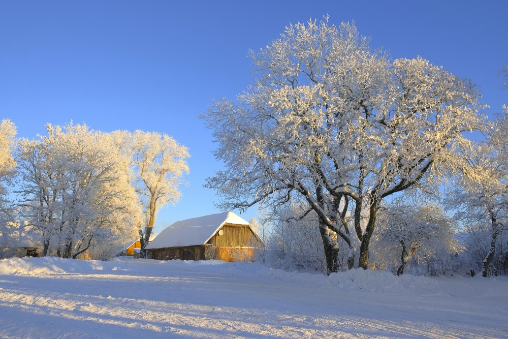
Winter (December to February): Snowy and serene, with temperatures often below 0°C. Enjoy a picturesque winter wonderland with activities such as sledding, ice skating, and cross-country skiing.
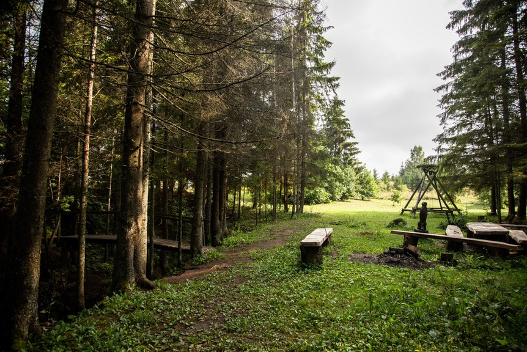
Spring (March to May): Fresh and green, with blooming flowers and mild weather. Perfect for exploring nature, birdwatching, and attending local markets that showcase fresh produce and artisanal goods.
Each season in Auce offers something unique for visitors, from the sunny adventures of summer to the tranquil beauty of winter. Whether you prefer warm weather for outdoor activities or snowy landscapes for winter sports, Auce provides a range of experiences to suit every preference. Don’t forget to check the weather forecast before your trip to ensure a comfortable and enjoyable visit!
Culture
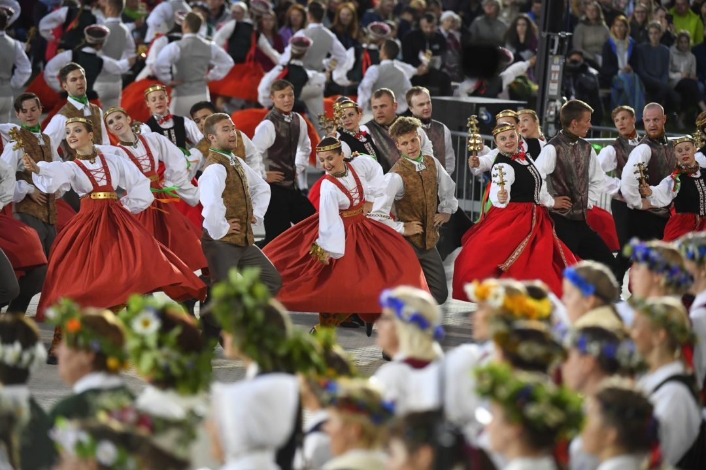
Traditional Dance: A vibrant part of Auce's cultural festivities.
Sklandrausis: The iconic carrot and rye tart, a local delicacy.
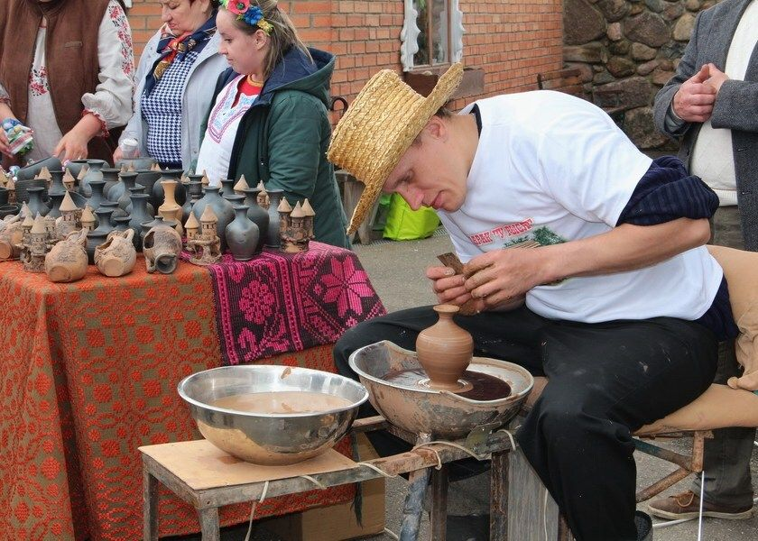
Handcrafted Goods: Artisans showcase their skills in local markets.
Immerse yourself in the vibrant cultural heritage of Auce, where traditions blend seamlessly with contemporary creativity. The town’s cultural scene reflects Latvia's rich history, offering unique experiences for every visitor:
Traditional Festivals: Auce comes alive during Latvia's most cherished celebrations, such as Midsummer's Eve (Jāņi). This ancient festival is marked by bonfires, singing, and traditional folk dancing under the open sky. Participants wear floral wreaths and enjoy festive foods, including cheese and beer. Visitors are welcome to join the festivities, making it a memorable cultural experience.
Local Folk Music: Experience the soulful melodies of Latvian folk music during performances in Auce. Traditional instruments like the kokle (a Latvian string instrument) take center stage, accompanied by songs passed down through generations. These performances often occur during festivals, community events, or in cultural centers, offering a glimpse into Latvia’s musical traditions.
Artisan Markets: Explore bustling markets that showcase the craftsmanship of local artisans. From intricately woven textiles and hand-knitted woolen goods to ceramics and woodwork, these markets are a treasure trove of Latvian culture. They also provide an opportunity to purchase unique souvenirs while supporting local artists.
Historical Exhibits: Discover Auce’s history through museums and cultural centers that feature exhibits on Latvian traditions, local legends, and historical artifacts. Learn about the region's past, including its agricultural roots and architectural heritage, such as the iconic Auce Manor.
Culinary Traditions: Savor the flavors of Auce by indulging in traditional Latvian cuisine. Local cafés and bakeries often serve favorites like rye bread, smoked fish, and seasonal berry desserts. Don't miss the chance to try sklandrausis, a sweet carrot and rye tart, and sample locally brewed drinks.
Seasonal Events: Throughout the year, Auce hosts various cultural events, including open-air concerts, art workshops, and theatrical performances. The town’s calendar is filled with opportunities to connect with the local community and participate in its vibrant cultural life.
Traditional Crafts Workshops: For a hands-on cultural experience, join a workshop where you can learn traditional Latvian crafts, such as weaving, pottery, or jewelry making. These workshops offer a deeper appreciation of Latvian artistry and make for a memorable activity during your visit.
History of Auce
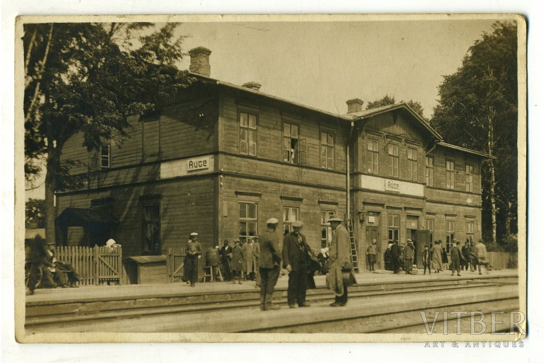
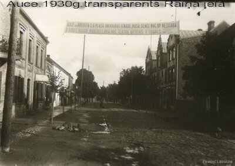
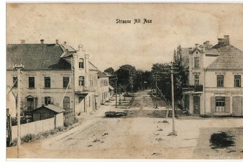
Auce’s history is a fascinating journey through time, rooted in the rich cultural and historical landscape of Latvia. From its medieval origins to its present-day charm, the town has evolved through various periods of occupation, independence, and cultural exchange, shaping the resilient community we see today:
Medieval Origins: The origins of Auce date back to the medieval period, where it served as an important trade and agricultural hub in the Duchy of Courland and Semigallia. Situated along key trade routes, it was a thriving center of commerce, where local goods such as grain, livestock, and timber were exchanged with merchants from neighboring regions. The town’s strategic location made it a focal point for both local and international trade.
Cultural Exchanges and Historical Occupations: Throughout the centuries, Auce found itself at the crossroads of various cultural and political influences. From the Germanic crusaders in the 13th century to Swedish, Russian, and Polish occupations, the town experienced a rich history of cultural exchanges. Each period left an indelible mark on the town’s architecture, language, and traditions. These diverse influences helped shape the local community, blending Latvian, German, and Russian elements into the town’s unique identity.
The Rise of Auce Manor: One of the most significant historical landmarks in the town is Auce Manor, built in the 19th century. This manor house, with its elegant architecture and lush surrounding gardens, was once home to noble families and played a central role in the region’s agricultural and cultural development. Today, the manor stands as a testament to the town’s aristocratic past, offering visitors a glimpse into the opulent lifestyles of the past while hosting cultural events and exhibitions.
Independence and Resilience: During the early 20th century, Auce became an important symbol of Latvian resilience. Following the declaration of independence in 1918, the town witnessed the growth of a strong national identity. Despite the challenges brought by subsequent occupations during both World Wars and the Soviet era, the people of Auce continued to preserve their cultural heritage and traditions, creating a proud legacy that endures to this day.
Preservation of Landmarks and Archives: Auce is home to several historical landmarks, including the old town with its cobblestone streets, traditional wooden houses, and the well-preserved Auce Manor. The town also boasts a wealth of historical archives, museums, and local heritage sites that tell the story of its people and their struggles for independence. These sites offer an enriching experience for history enthusiasts, who can delve deeper into the region’s past and understand the profound cultural legacy that shapes the town today.
Modern-Day Heritage and Identity: Today, Auce is a town that honors its historical roots while embracing its future. The community actively works to preserve its history through cultural events, historical tours, and educational programs. Local traditions are celebrated through festivals and activities that keep the town’s history alive, inviting visitors and residents alike to connect with the past while moving towards a promising future.
Auce’s history is a testament to the resilience and spirit of its people. From its medieval roots as a trade center to its modern-day charm as a preserved cultural destination, Auce remains a proud and vibrant town where history and tradition continue to thrive.
Food & Music
Immerse yourself in the warm flavors and captivating sounds of Auce, where every meal is a celebration, and every melody tells a story.
Food:
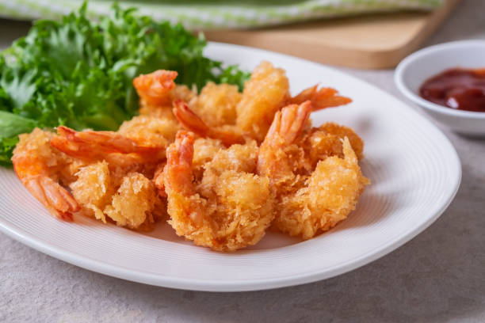
The food in Auce is a delightful reflection of its rich agricultural history. Simple, yet incredibly flavorful, the local cuisine is all about embracing the freshest ingredients and centuries-old traditions. Picture yourself enjoying these delicious local specialties:
Rye Bread (Rupjmaize): No meal in Auce is complete without a slice of dark, hearty rye bread. It’s soft yet firm, with a slight tang that pairs perfectly with butter, cheese, or a helping of smoked meat. Rye bread isn't just food here; it's a symbol of Latvian identity.
Smoked Meats: The tradition of smoking meats in Auce is a long-standing one, with sausages and smoked ham being the local favorites. The deep, smoky flavor infused with aromatic herbs makes every bite a true experience.
Hearty Soups: The chill of winter calls for a steaming bowl of soup. The people of Auce know how to make the best of seasonal vegetables, crafting soups like pea soup or cabbage soup that warm you from the inside out.
Fresh Dairy Products: Auce's dairy is second to none. Creamy cheeses, silky curds, and tangy sour cream are just some of the offerings you can enjoy, all made from the freshest milk sourced locally.
Wild Berries & Preserves: With forests and fields teeming with wild berries, Auce’s local jams and preserves are a must-try. Lingonberries, blueberries, and cranberries, picked straight from the wild, find their way into the town's kitchens, turning into sweet and tangy spreads that pair beautifully with breakfast or desserts.
Whether you’re sitting down to a cozy meal in a rustic café or attending one of the town’s lively food festivals, Auce’s culinary delights are sure to leave you satisfied and wanting more.
Music:
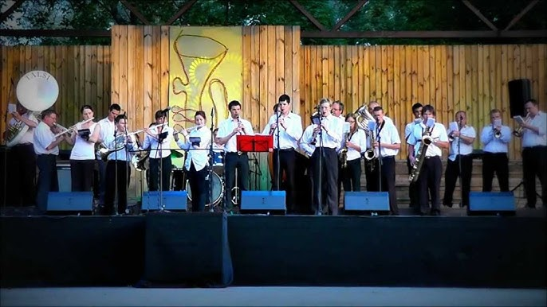
Music in Auce isn’t just a pastime – it’s woven into the very fabric of daily life. The town hums with melodies that span centuries, from the soulful tunes of folk music to the upbeat rhythms of modern performances. In Auce, music brings the community together, offering a soundtrack to everything from festivals to quiet afternoons in the park.
Traditional Folk Music: The heart of Auce’s musical heritage lies in its folk music. The gentle strumming of the kokle, a traditional Latvian instrument, the soothing sounds of the accordion, and the lilting notes of the violin are the music of the soul. These instruments breathe life into age-old songs that tell stories of love, nature, and the land.
Folk Dancing: The rhythm of Auce’s folk music is often accompanied by lively folk dances, with everyone from children to grandparents joining in. With dances like the polka and mazurka, locals wear colorful costumes and come together to celebrate their culture, creating an atmosphere filled with joy and unity.
Modern Musical Tastes: While tradition runs deep, the town also embraces contemporary music. Modern jazz, pop, and rock performances add a fresh twist to Auce’s cultural calendar. Visitors can enjoy a mix of old and new, with everything from intimate acoustic performances to larger concerts that energize the town’s spirit.
Music Festivals: Every year, Auce comes alive with music festivals that showcase both traditional and modern talents. These festivals draw crowds from across Latvia, where you can enjoy local bands, traditional choirs, and much more. The music fills the air, and the vibrant energy is contagious.
Singing Traditions: Singing plays a central role in Latvian culture, and in Auce, this tradition is alive and well. The “dainas,” traditional folk songs passed down through generations, are still sung at community gatherings. Whether in a choir or by a campfire, the people of Auce sing to preserve their history and celebrate their unity.
Food and music in Auce aren’t just experiences – they’re a way of life. They’re an invitation to indulge in local flavors, dance to timeless rhythms, and immerse yourself in the heartbeat of the town. Come for the food, stay for the music, and leave with memories that will last a lifetime.
Geography
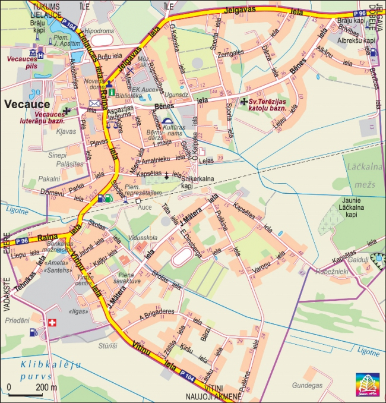
Auce is situated in the picturesque Zemgale region of Latvia, known for its vast natural beauty, agricultural significance, and rich historical landscapes. This region is often referred to as the "breadbasket of Latvia" due to its fertile plains and thriving farms.
Rolling Hills and Fertile Plains: The area around Auce consists of gently rolling hills and expansive plains, making it ideal for agriculture. Wheat, barley, and other crops are commonly grown here, contributing to Latvia's food production.
Proximity to the Lielupe River: The nearby Lielupe River enhances the geography with its scenic banks, offering perfect spots for picnics, fishing, and kayaking. The river's ecosystem supports diverse flora and fauna, making it a hub for nature lovers.
Nature Reserves and Green Spaces: The region around Auce features protected nature reserves, forests, and walking trails that provide opportunities for hiking, cycling, and birdwatching. These areas are perfect for visitors seeking tranquility and connection with nature.
Climate Influence: The temperate climate in Auce, with its four distinct seasons, shapes the region's lush greenery in spring, golden landscapes in autumn, and snow-covered scenery in winter, all of which contribute to its geographical charm.
Auce’s geography makes it not only an agricultural center but also a destination for outdoor enthusiasts and travelers looking to explore Latvia’s countryside. The small-town charm, coupled with the surrounding landscapes, offers both recreational activities and a peaceful retreat.
Accommodations
Whether you're looking for a modern hotel, a charming guesthouse, or a rural retreat, Auce offers a variety of lodging options to suit different budgets and preferences.
Stay in comfort while experiencing the warmth and hospitality of this picturesque town.
Hotels: Modern and comfortable accommodations with essential amenities like free Wi-Fi, on-site dining, and parking facilities. Perfect for families, business travelers, or those seeking convenience.
Auce Hotel – Centrally located with spacious rooms and family-friendly services.
Jelgava Regional Hotel – A short drive away, offering modern amenities and easy access to local attractions.
Guesthouses: For a cozier and more personalized stay, choose one of Auce’s welcoming guesthouses. These lodgings often reflect local charm and offer a warm atmosphere for travelers.
Auce Guesthouse – Offers comfortable rooms and homemade breakfast, located near the town center.
Zemgale Cottage – A peaceful guesthouse surrounded by gardens, perfect for a relaxing getaway.
Rural Homesteads: Experience traditional Latvian hospitality by staying in rural farmhouses and countryside lodges. These accommodations are ideal for nature lovers and visitors seeking tranquility.
Lielupe Homestead – A traditional farmhouse near the Lielupe River, offering beautiful nature views and outdoor activities.
Sunrise Farm Stay – A rustic rural retreat with opportunities for hiking, cycling, and fresh local meals.
Most accommodations can be easily booked through platforms like Booking.com, Airbnb, or local tourism websites. It is recommended to book in advance during peak seasons such as summer and holidays to ensure availability.
Events Calendar
Plan your visit to Auce around exciting annual events, community gatherings, and holidays that showcase the town’s vibrant culture and traditions.
Annual Festivals:
Summer Solstice Festival (June 21-23): A grand celebration marking the longest day of the year with traditional Latvian music, dancing, bonfires, and feasts. A favorite among locals and tourists alike.
Auce Day (First Saturday of August): A town-wide celebration featuring parades, live performances, food stalls, games, and fireworks.
Local Events:
Weekly Farmer's Market: Held every Saturday morning, offering fresh produce, homemade goods, and crafts from local vendors.
Art Exhibitions: Monthly exhibitions at the Auce Cultural Center showcasing works by regional and national artists.
Cultural Performances: Concerts, plays, and dance performances held throughout the year, celebrating Auce's artistic spirit.
Public Holidays and Major Events Calendar
Plan ahead! Public holidays are marked in red for your convenience:
Month
Date
Event / Holiday
January
January 1
New Year's Day
March
March 25
Spring Equinox Celebration
April
April 10
Easter Monday
June
June 21-23
Summer Solstice Festival
August
First Saturday
Auce Day Celebration
November
November 18
Latvia's Independence Day
December
December 24-26
Christmas Celebrations
Local Businesses
Support Auce's vibrant economy by exploring its local businesses:
Shops: Unique boutiques offering handmade crafts, souvenirs, and local products.
Dining: Restaurants and cafes that serve authentic Latvian cuisine and international dishes.
Visitor Information
Essential details to help you make the most of your visit:
Tourist Office: Located in the town center, offering maps, brochures, and guidance.
Guided Tours: Available in multiple languages, showcasing key attractions and local stories.
Contact Us
We are here to assist you:
Social Media: Follow us on Facebook, Instagram, and Twitter for updates and travel tips.